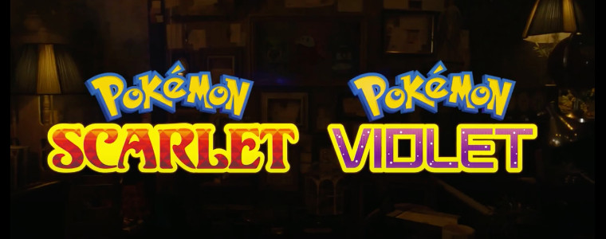
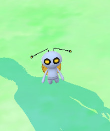

Pokémon Database - News & Updates
Welcome to The Pokémon Database! We believe in making Pokémon information as clear and easy to digest as possible.
On this page below you'll find the recent Pokémon news and updates to this site. Delve deeper using the menu above to find detailed, Pokédex entries , attack stats , evolution chains and our thriving community of awesome Pokéfans who'll answer your questions. And much more besides!
New trailer for Scarlet/Violet DLC
Pokémon Scarlet & Violet — 21 June, 2023
A new trailer has been released for the Pokémon Scarlet/Violet expansion, "The Hidden Treasure of Area Zero". Not much new information is given, however we do see Okidogi, Munkidori, and Fezandipiti natively in-game.
The first part, The Teal Mask introduces us to two trainers Carmine and Kieran in the new region of Kitakami. There is a "Festival of Masks" going on. The second part, The Indigo Disk, sees you visit Blueberry Academy, which appears to feature a large battle arena known as a "Terarium".
New mystery Pokémon discovered for Scarlet/Violet DLC
Pokémon Scarlet & Violet — 17 April, 2023
A new Pokémon has been revealed for the upcoming Scarlet/Violet DLC, "The Hidden Treasure of Area Zero":
Very little information has been revealed but it appears to be related to Terapagos (maybe a pre-evolution). The official site states:
Pokémon Presents reveals DLC for Pokémon Scarlet/Violet and more
Pokémon Scarlet & Violet — 27 February, 2023
A new Pokémon Presents has just finished airing and revealed multiple new items. The biggest news was a new DLC update for Pokémon Scarlet & Violet. Named The Hidden Treasure of Area Zero, it comes in two parts:
- The Teal Mask, to be released autumn this year. In this part you visit a new land, "Kitakami", on a school trip
- The Indigo Disk, to be released in winter this year. In this part you study as an exchange student at "Blueberry Academy".
Over 230 Pokémon from past generations will be available to catch in these new regions, or brought in via Pokémon Home. Several new Pokémon were also announced:
- Walking Wake, a Water/Dragon type Paradox Pokémon that looks like Suicune. It will be available very shortly.
- Iron Leaves, a Grass/Psychic type Paradox Pokémon that looks like Virizion. It will be available very shortly.
- Okidogi, a large green canine Pokémon.
- Munkidori, a blue ape-like Pokémon.
- Fezandipiti, a large pink/red bird Pokémon.
- Ogerpon, a legendary Pokémon available in Part 1.
- Terapagos, a legendary Pokémon available in Part 2.
Artwork and more news can be seen below. Here is the full Pokémon Presents video:
Pokémon Scarlet & Violet released!
Pokémon Scarlet & Violet — 17 November, 2022
The newest games in the Pokémon franchise, Pokémon Scarlet & Pokémon Violet are starting to be released around the world! As usual we are busy cataloguing all the new information for the games such as new Pokémon, moves, abilities and locations.
Here are some links to notable pages:
- Scarlet/Violet Pokédex
- The new Pokémon, with stats
- New moves introduced
- Gym Leaders & Team Star Bosses
- TM locations
- Pokémon locations
New trailer hints at mysterious Pokemon from legends
Pokémon Scarlet & Violet — 08 November, 2022
A new trailer has been released for Pokémon Scarlet & Violet. For the most part it recaps things we've already seen to the tune of Ed Sheeran's "Celestial" (which is part of the soundtrack to the game), but near the end some brief shots of new Pokémon are seen. They bear a resemblance to Donphan, and according to the press release are known as "Great Tusk" and "Iron Treads".
The two Pokémon are exclusive to Scarlet & Violet respectively, and are part of the "Scarlet Book" / "Violet Book" which are ancient tomes written about an expedition in the past.
New Pokémon Gimmighoul revealed
Pokémon Scarlet & Violet — 06 November, 2022
Following on from yesterday's addition to Pokémon GO, today a new trailer was released which confirms the Pokémon to be Gimmighoul. It is Ghost type and has two forms - Roaming Form, which is the one appearing in GO - and Chest Form, where it tries to get people to give it coins.
The Pokémon GO website also added an update, confirming that linking Scarlet/Violet with GO will allow catching the Roaming Form in GO, which can then be transferred (via HOME) to SV.
New coin Pokémon released via Pokémon GO
Pokémon Scarlet & Violet — 05 November, 2022
A new "Pokémon" has surfaced, following Dratini Community Day in Pokémon GO (which runs from 2-5pm on Saturday 5th). Yesterday its model was found in GO data and leaked by PokeMiners on Twitter.
At 5pm, this creature begins following the player around the map, however, it is not catchable (and may not be a real Pokémon, in the vein of Zygarde cells). Several PokéStops turn gold and many items can be acquired from them, including a "?????? Coin" which is apparently from the Paldea region.
UPDATE: a new website chest.pokemon.com was unveiled by the Pokémon Twitter account. It has a treasure chest which updates periodically. As I discovered, it's set to update at specific intervals, concluding at 24 hours and 999 coins (1pm GMT/6am PT), with something else happening an hour later at 2pm GMT/7am PT - possibly a new trailer!